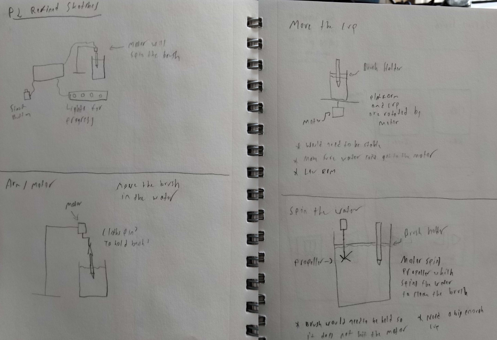

P2 was a physical prototype to solve a simple problem with Arduino. Initial sketches:
Out of all the initial ideas presented in class, two prominent ideas received most of the feedback. Between the handsfree navigation shirt and the automatic brush cleaner, we ruled out the wearable project as it did not contain an input sensor. We further refined the brush cleaner idea:
The idea with the motor underneath the cup was not used, since the motors are not waterproof. It was also brought up that in order to clean brushes more effectively, it would need to be run along some sort of brush or rough surface to remove all of the contaminants.
Neil's refined sketches focused on how to hold all the components together using a stand:
Tyler worked on methods to wash the brush:
Fran came up with ideas on how to attach the brushes to the servo motor:
In the end, we settled on the simplest movement of the brush; back and forth. The final idea was to move the brush (submerged in water/thinner) against a rough surface by having the servo move to one position and back, repeatedly. As demonstrated in the video below, this action is enough to clean the brush.